Pichu!
Stats:
- Type: Miniature Pinscher
- Birthday: 11/26/2004
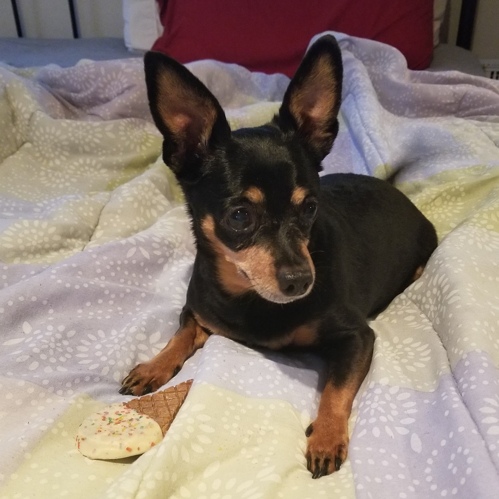
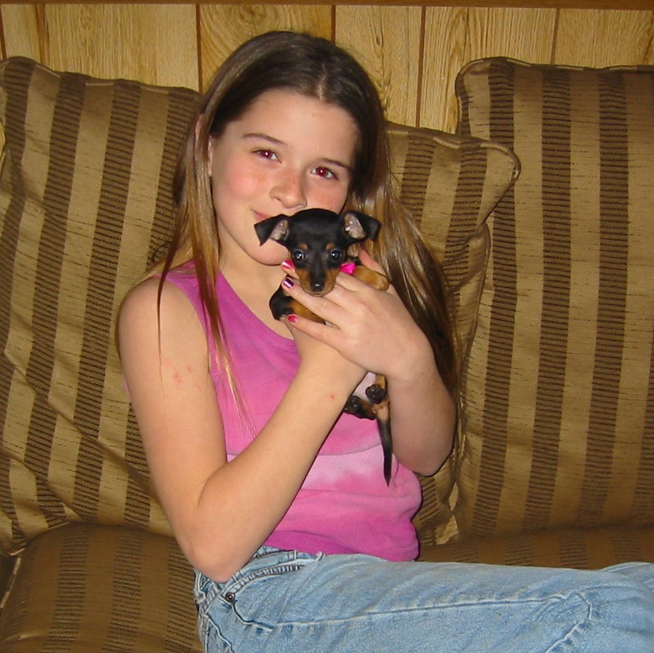
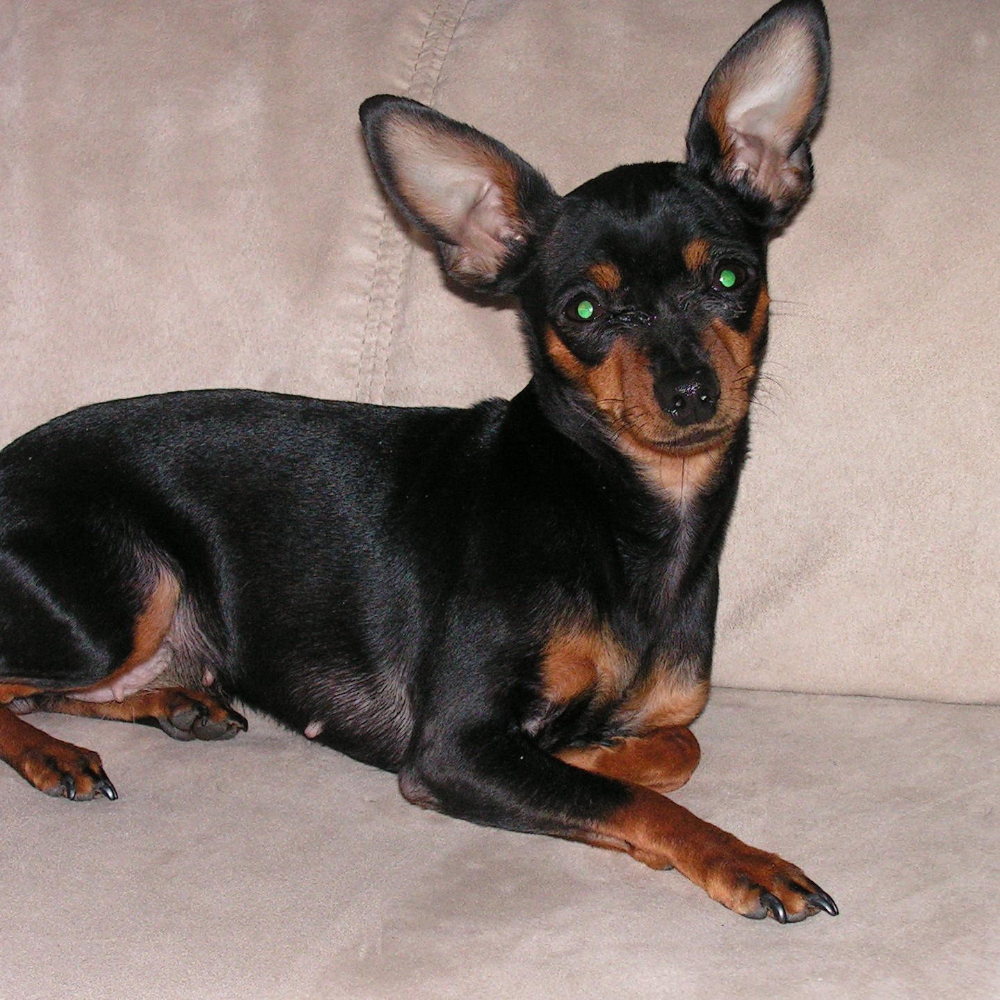
So I know I said "interests" up above (presumably because I'd talk about hobbies) but I wanted to start off with my dog Pichu. Basically, when I say I love fire, let it be known that this little 7 lb. dog is a wildfire all on her own. This tiny container of chaos is full of so much rage against the world that when I let her outside she just barks up at the sky before carrying about her business. My dad threw a towel over her as a puppy (so he could catch her, she kept running away from him) and this dog has never let go of her grudge from that moment. Keep in mind that was, uh, around 15 years ago now. She's not a full-on stereotypical tiny terror though, she gives everyone a chance, and doesn't try to bite people. If she really loves you she gives "hugs", which is where she'll lay on your chest and nuzzle her head into your chin.
Overall Score: 10 out of 10 pupperoni
Fire? Oh Yeah, Fire!
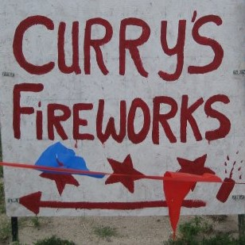
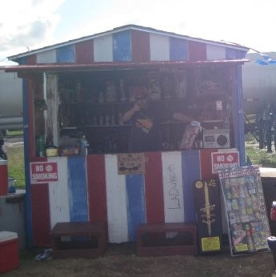
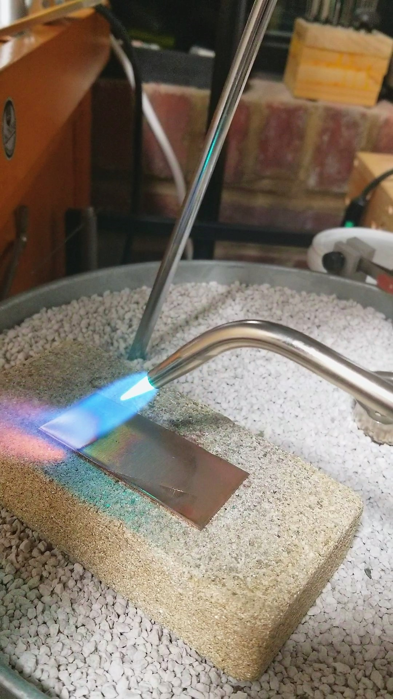
My dog isn't the only place where I fell in love with fire. Growing up, my family owned a firework stand that my dad had purchased at 13! Once my grandma took over and convinced him to sell more than just things that go 'bang', the firework stand became a family tradition. Every summer I would go stay with my grandparents, and almost all of my time around July 4th was spent at the firework stand. I grew up lighting off every firework I could find, and then experimented with making my own by combining the powders. While I know that sounds dangerous (and they are!), I had a healthy respect for the devastation that fireworks could bring.
Side Story Time:
When I was around 4 years old, someone lit a firework near the stand on a windy day, which tipped it over so that it shot and exploded right underneath the chair I was sitting on. The chair was plastic, so it melted into my back and I had to go to the ER (which, being in a rural Kansas town, was a good drive away). Thankfully I don't remember the pain from it, just that the doctor gave me a sucker for being so calm! Apparently my skin also grew back like a spider web, so that's pretty cool (and still today my back is more sensitive to hot water). But yeah, that made me appreciate the dangers of fire, and of course fireworks a lot more.
Despite all of that I still fell in love with working with fire. When I lit an acetylene torch for the first time in college I instantly knew that metalsmithing was going to be the path that I'd take.
Casting
Ahh, casting. Trying to keep a molten blob of metal happy as you attempt to funnel it into a tiny hole (that hopefully you made steep enough so that it doesn't become a slide that shoots the metal right back out).
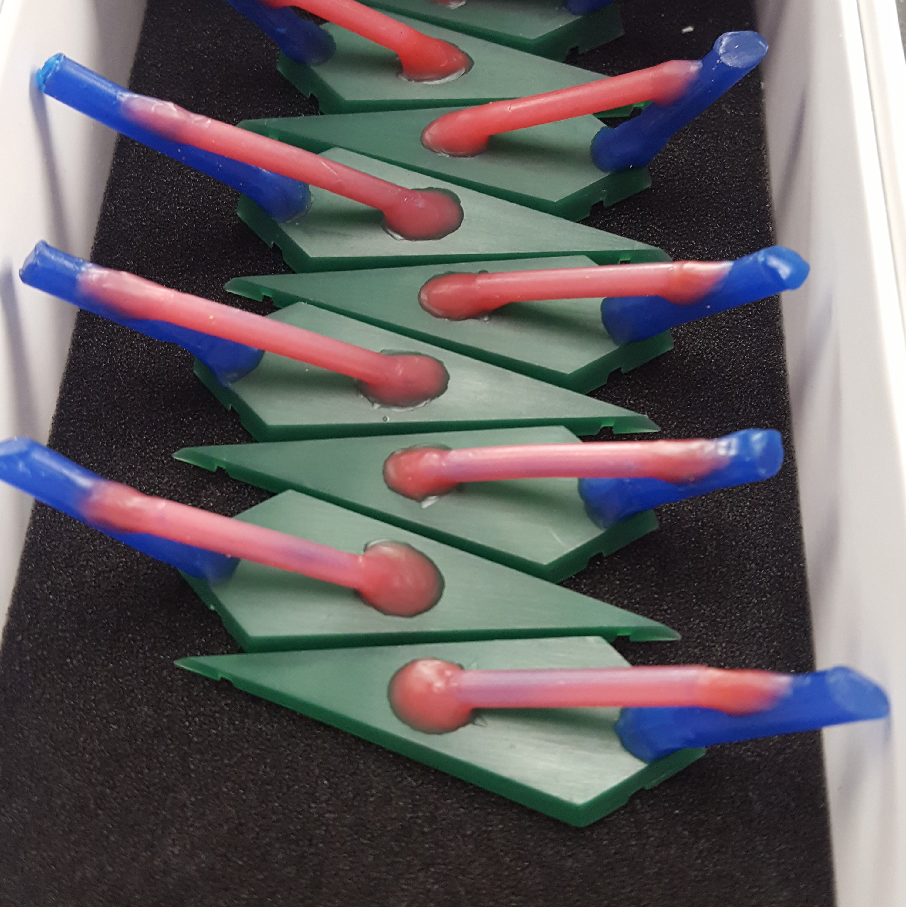
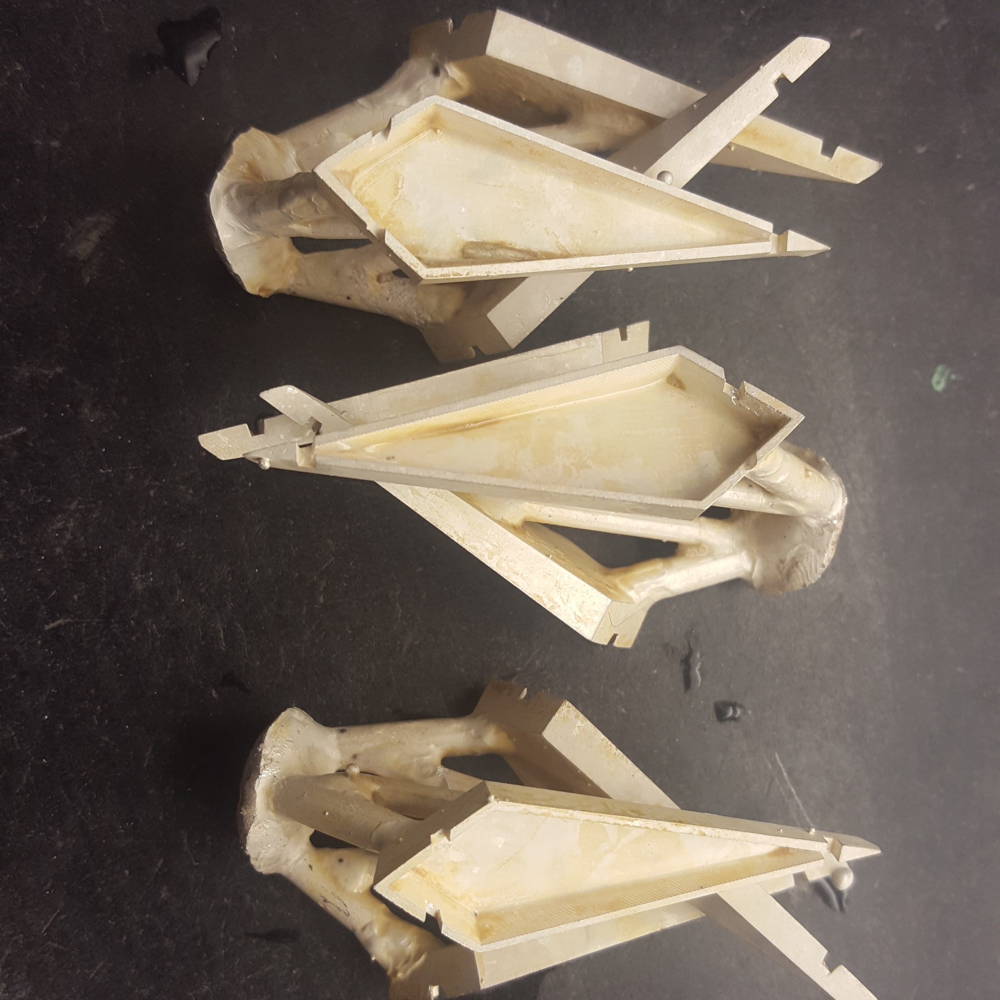
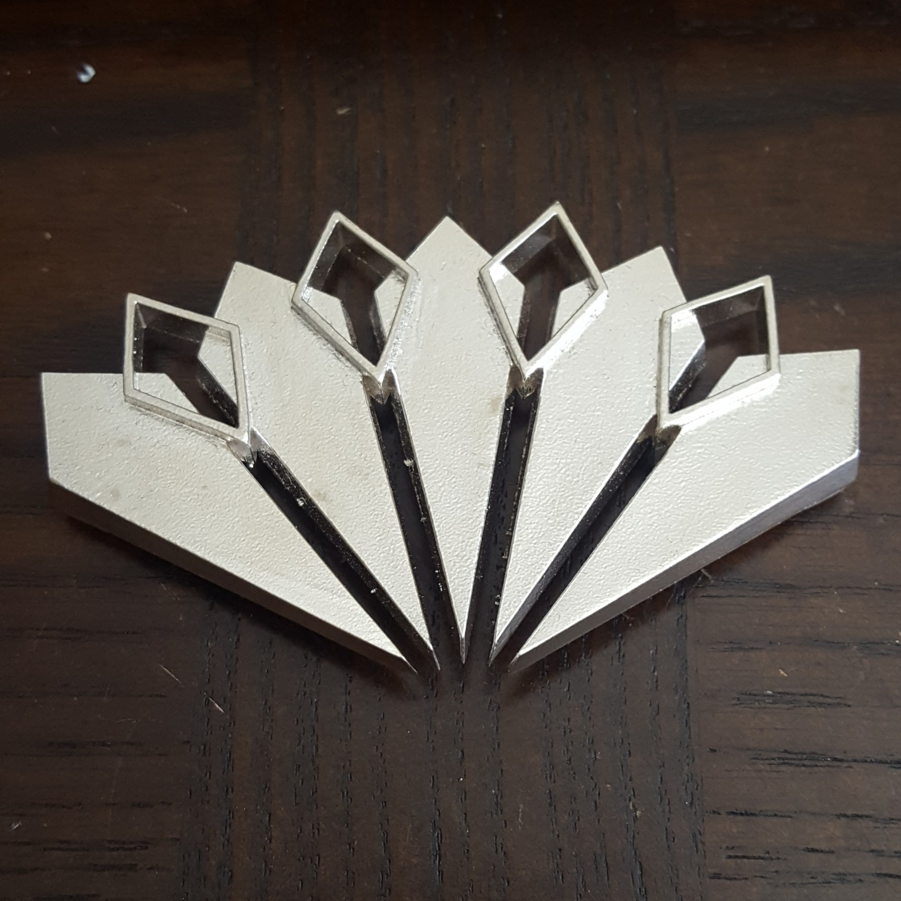
This is where I really got to play with fire. Initially you hand carve wax by using a combination of x-acto knives and dental tools that you'd heat up over an alcohol lamp. Then if you wanted to soften any edges of your wax carving, you'd just swiftly move it across the flame (this could end up as a blobby wax puddle though if you held it in one place a millisecond longer). Wax carving is oddly relaxing, like whittling wood but softer and more forgiving since you can just melt more wax onto places that get too thin/need more material.
Then once you've carved your piece, you stick it onto a rubber base and put a metal cylinder around it. Plaster gets poured into the cylinder, then you remove the base and stick it in a kiln to melt the wax out (leaving a hollow cavity for metal to flow into). You heat the entire thing up in the kiln to roughly the molten temperature of your metal. Once it's hot, you melt your metal, QUICKLY move your cylinder onto a vacuum, and pour your metal in. Voila! You have a casted piece of art!
Casting was hands down my favorite skill thus far, even though the speed of things can be downright nerve-wracking. But pouring metal and breaking away the chunks of plaster to see your work is like a little present for yourself.
Japan
I'll jump off the metalsmithing talk for a bit, to talk about Japan!
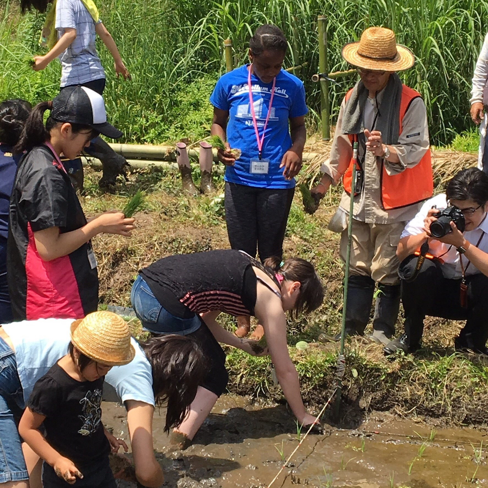
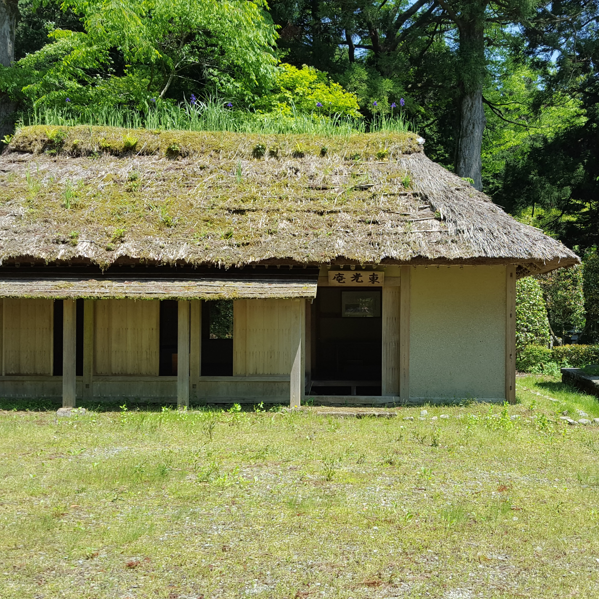
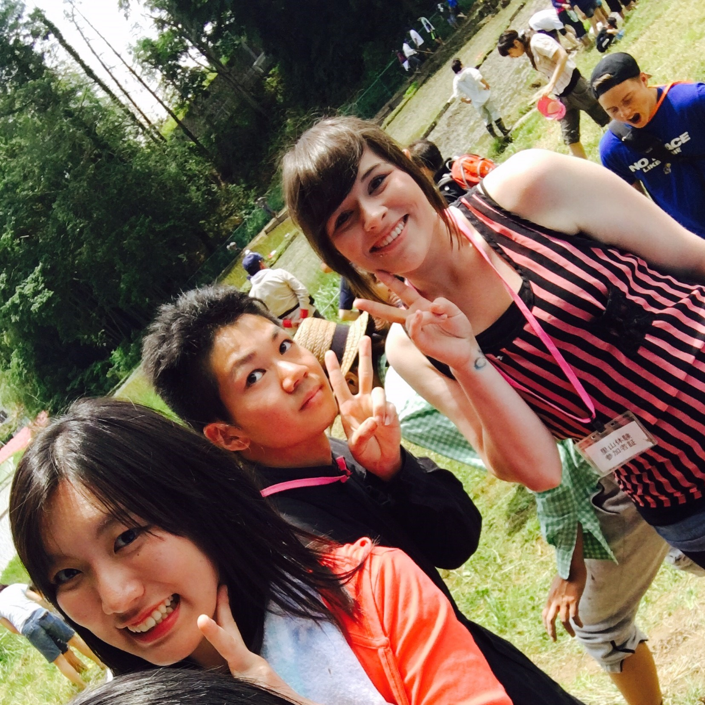
Languages have always been a defining interest for me. Growing up, I had a best friend who was Colombian and her family would try to teach me Spanish. For some reason, I could never get Spanish to stick with me. Then my best friend went to Japan and brought back all kinds of things for me, and that's when we started to try and learn Japanese together. We didn't get very far with self-teaching since we were only in 3rd grade, and since it was 2003 there wasn't a lot available for studying. In highschool I took 2 years of French, which also never quite stuck with me, and I figured I just was not cut out for language learning.
Then I went to college!
In college I was able to take a language for my degree, and picked Japanese to study. Instantly it clicked. The sentence structure made perfect sense, the verb conjugation was easy to understand, and the written aspect of it was practically like studying art. After a year of studying, there was a study abroad opportunity for the summer so I decided to take it.
Hiratsuka
The program was very hands-on. We stayed on campus for a week, and then with a host family, before going back to stay on campus for the remainder of the time. This way we were able to make a genuine connection with other students as well as with our host family. We also interacted a lot with the community in Hiratsuka. We visited an elementary school (where we got roasted by children), saw a glimpse of the traditional lacquer process, helped plant rice fields, participated in a traditional tea ceremony, and even met the mayor of Hiratsuka!
Overall, it was an amazing experience and I still message and send postcards to my host family and friends that I made while I was there. Plus the ramen there was killer, and most places cost less than 500¥, which is roughly $5.